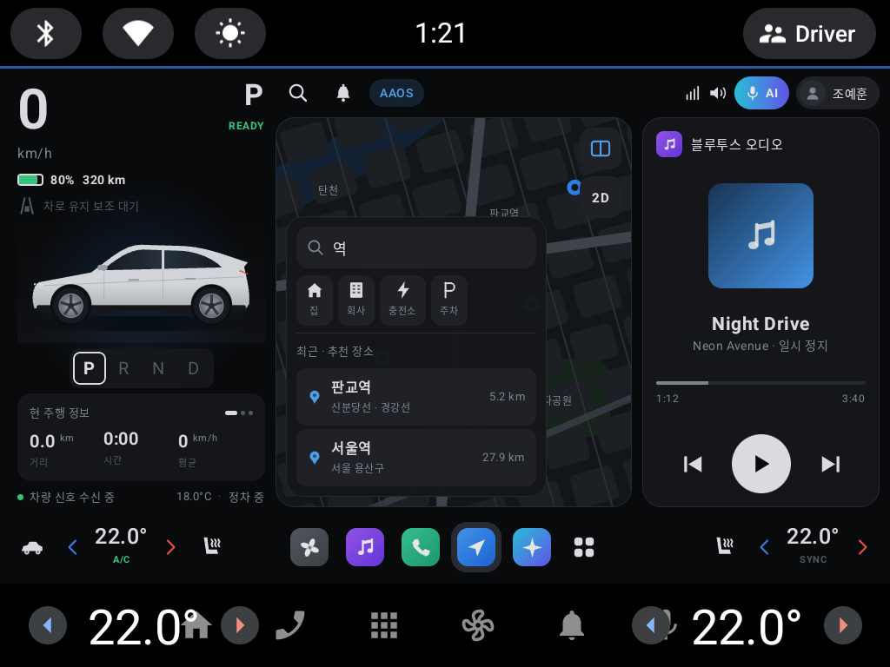
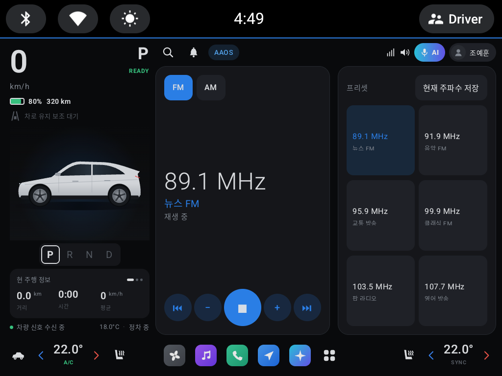
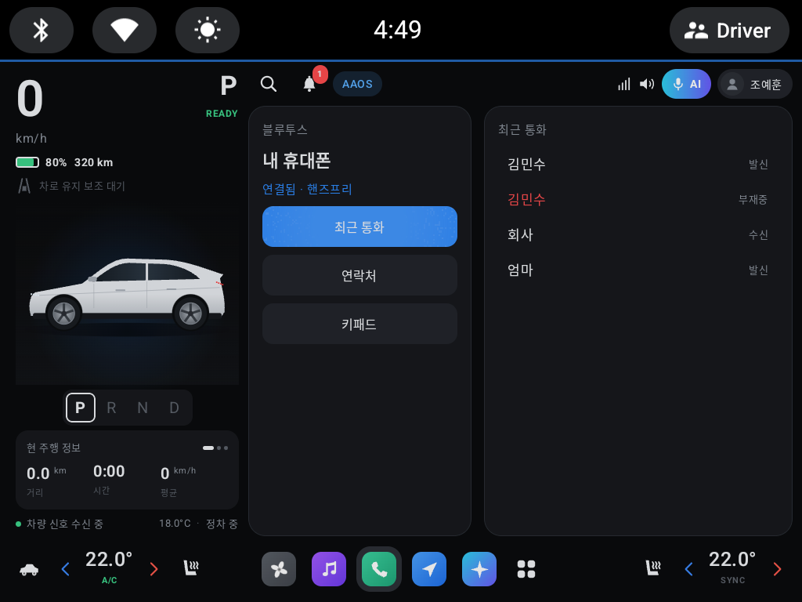
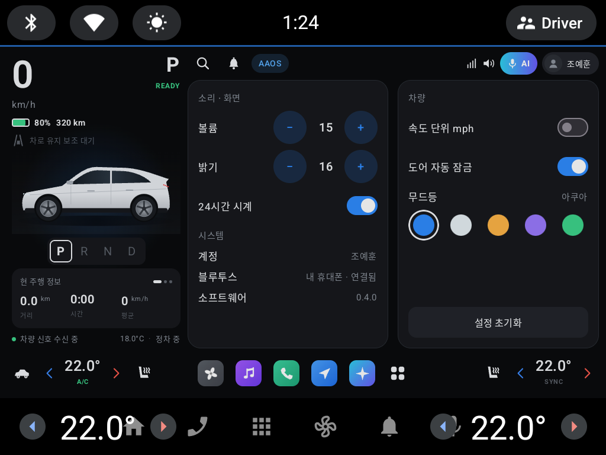

6단계 기능 확장: 내비게이션, 라디오, 전화, 설정, 후방 카메라, 음성
2026-11-13에 정리했습니다. 양산 IVI(ccNC, Pleos Connect 등)가 홈과 앱 바에 두는 기본 메뉴를 갖췄습니다. 화면 구조는 5단계에서 정한 원칙을 그대로 따랐습니다. 구조만 참고하고 제조사 로고, 제품명, 서비스명, 실제 지도 데이터는 쓰지 않았습니다.
1. 기능과 테스트
| 기능 | 내용 | 차량 신호, 주행 제한과 엮인 부분 | 테스트 |
|---|---|---|---|
| 내비게이션 | 검색, 미리 보기, 안내(다음 안내, 남은 거리, 도착 예정), 도착. 즐겨찾기(집, 회사) | 남은 거리가 차량 속도 신호를 따라 줄어듭니다. 주행 중에는 검색 입력이 막히고 즐겨찾기만 쓸 수 있습니다. | 6개 |
| 라디오 | FM(0.1 MHz)과 AM(9 kHz), 미세 조정, 방송국 찾기, 프리셋 6개 저장 | 라디오와 음악 중 하나만 소리를 냅니다. | 6개 |
| 전화 | 가상 블루투스 핸즈프리. 최근 통화, 연락처, 키패드, 통화 화면 | 주행 중에는 키패드가 막히고 연락처는 5개까지만 보입니다. 통화 중에는 오디오가 멈췄다가 끝나면 다시 나옵니다. | 4개 |
| 설정 | 볼륨, 밝기, 24시간 시계, 속도 단위(km/h, mph), 도어 자동 잠금, 무드등, 초기화 | mph로 바꾸면 차량 속도 50 km/h가 31 mph로 보입니다. | 5개 |
| 후방 카메라 | 기어가 R이면 모든 화면 위에 카메라 화면과 주차 가이드 선이 뜹니다. | 기어 신호(GEAR_SELECTION=R)만으로 뜨고 사라집니다. | 3개 |
| 음성 | 상태 줄의 '음성'을 누르면 명령 문장 네 개가 나옵니다. 음성 인식 대신 알아들은 문장을 누르는 것으로 대신했습니다. | "운전석 온도 24도로 맞춰줘"라고 하면 차량 공조 신호가 24.0°C로 바뀝니다. | 5개 |
smoke의 탭 이동 테스트도 7개 탭으로 늘렸습니다. 전체 테스트는 31개에서 64개가 됐고(AAOS 전용 6개 포함), 단위 테스트는 25개입니다.
2. 앱 구조
파일을 기능별로 나눴습니다.
ivi-app/app/src/main/java/dev/opencabin/ivi/
state/SettingsStore.kt 저장 설정 (SharedPreferences와 StateFlow): 볼륨, 밝기, 시계, 단위, 무드등, 라디오 대역과 주파수, 프리셋
state/CabinController.kt 화면들이 함께 쓰는 상태와 규칙: 오디오 하나만 재생, 통화 중 일시 정지, 경로 진행, 음성 명령
ui/Theme.kt 색과 공통 부품 (Panel, RoundButton, PillButton, ToggleRow, StepperRow)
ui/Shell.kt 화면 틀: 상태 줄, 주행 정보, 앱 바(7개), 통화 화면, 음성 패널, 후방 카메라, 밝기
ui/Home.kt Navigation.kt Radio.kt Media.kt Phone.kt Climate.kt SettingsScreen.kt
ivi-app/app/src/debug/ TestHookReceiver. 테스트가 저장 설정을 초기화할 때 쓰는 입구 (release에는 없음)3. 테스트를 위해 앱에 넣은 것: 테스트 훅
저장 설정은 앱을 다시 켜도 남습니다. 그래서 한 테스트에서 mph로 바꾸면 다음 테스트도 mph로 시작하게 됩니다.
이 문제를 막으려고 src/debug에만 TestHookReceiver를 두고, app 픽스처가 테스트마다 am broadcast … test.RESET을 보내 기본값으로 되돌립니다. debug 소스 세트라 release 빌드에는 들어가지 않습니다.
기기마다 차이가 있었습니다. AAOS 에뮬레이터는 앱이 꺼져 있어도 브로드캐스트를 받지만(-f 0x20), 화웨이는 꺼진 앱에는 전달하지 않습니다(logcat에 targets O+, restricted가 남습니다). 그래서 앱을 띄운 뒤에 초기화합니다. 설정이 화면에 바로 반영되기 때문에 결과는 같습니다.
4. 회귀 테스트에서 잡은 것
| 증상 | 원인 | 처리 |
|---|---|---|
"집으로 안내해줘" 뒤에 nav_dest_name을 찾지 못했습니다. |
기능은 동작했는데, 명령을 처리한 뒤에도 음성 패널이 남아 안내 화면을 가렸습니다. | 앱 결함으로 보고 고쳤습니다. 명령을 처리하면 패널을 닫고, 결과는 상태 줄 알림으로 5초 동안 보여 줍니다. 회귀 테스트 test_voice_panel_closes_after_command를 더했습니다. |
| 통화 중에 전화 화면을 열지 못했습니다. | 통화 화면이 위를 덮어서 머리글(phone_device)이 보이지 않았습니다. |
테스트 쪽 약속을 고쳤습니다. 화면 객체가 통화 화면도 '전화 화면이 열림'으로 봅니다. |
| 태블릿에서 설정 초기화가 되지 않았습니다. | 화웨이가 꺼진 앱에 브로드캐스트를 전달하지 않습니다. | 3절처럼 앱을 먼저 띄우도록 순서를 바꿨습니다. |
| 라디오 전원 버튼이 네모로 보였습니다. | ⏻ 글자가 기본 글꼴에 없습니다. |
▶와 ■로 바꿨습니다. 화면을 직접 보다가 찾았습니다. |
UiAutomator는 다른 요소에 가려진 요소를 화면 소스에 넣지 않습니다. 그래서 '가려짐'은 테스트에서 '요소 없음'으로 나타납니다. 1단계에서 찾은 버튼 겹침 결함과 같은 종류입니다. 실패 자료의 스크린샷을 보면 가려진 것인지 바로 구분할 수 있었습니다.
5. 결과
6단계 끝에 돌린 전체 회귀 결과는 이 문서에 따로 남기지 못했습니다. 이때 만든 64개 테스트는 7단계 화면 개편 때 하나만 고쳐서 지금도 그대로 쓰고 있고, 최근 결과는 테스트 결과에서 볼 수 있습니다.
6. 화면
6단계 당시 화면은 저장소에 남기지 못했습니다. 아래는 7단계 개편 뒤 같은 기능의 화면이고, 2026-11-18 전체 실행에서 각 테스트가 끝났을 때 AAOS 에뮬레이터에서 찍은 것입니다.
| 홈 | 내비게이션 (검색) |
|---|---|
 |
 |
| 라디오 | 전화 |
|---|---|
 |
 |
| 설정 | 후방 카메라 (기어 R) |
|---|---|
 |
 |